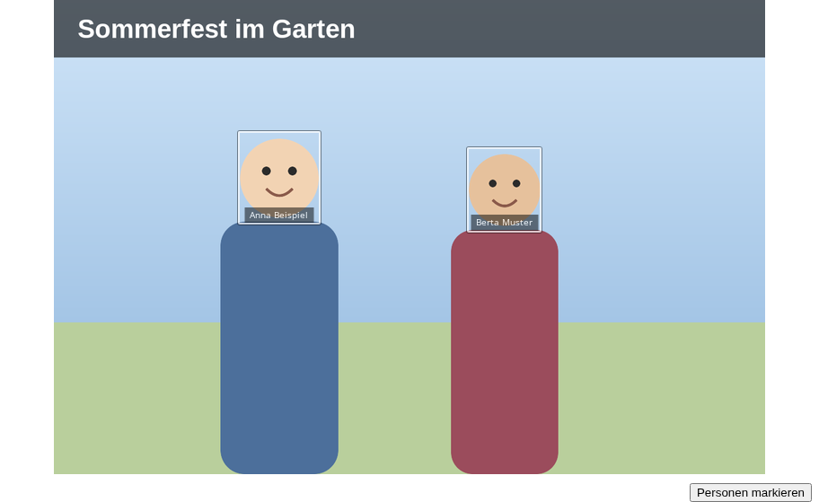
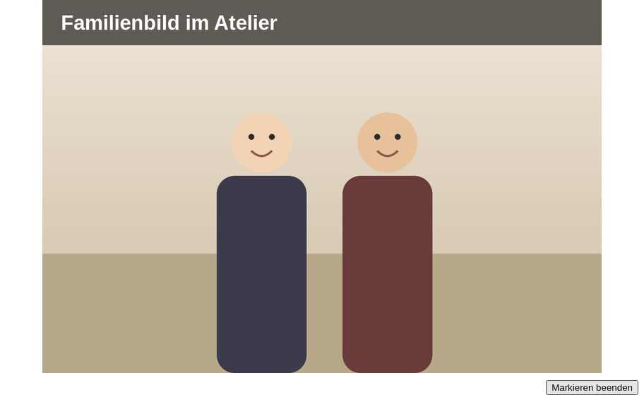
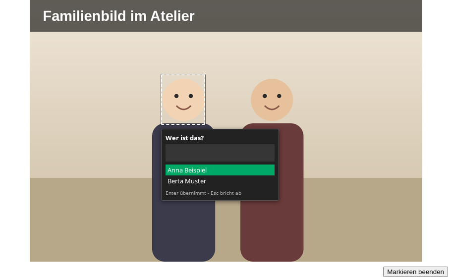
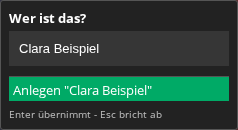
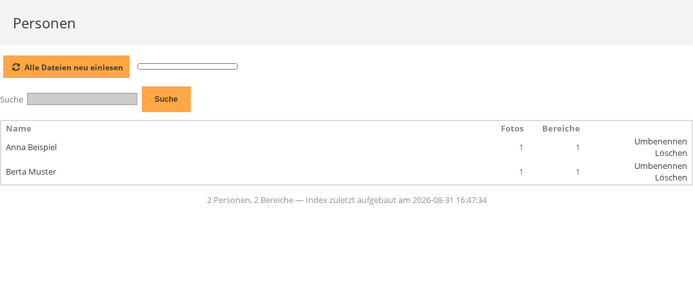

Auf einem Foto lässt sich ein Rechteck über ein Gesicht ziehen und mit einem Namen versehen. Danach ist die Person im Bild beschriftet und über ihren Namen sind alle Fotos zu finden, auf denen sie markiert ist. Das geschieht auf der öffentlichen Fotoseite und steht jedem angemeldeten Benutzer offen. Nicht angemeldete Besucher sehen weder die Rahmen noch die Zeile Personen.
Die Rahmen sind unsichtbar, solange die Maus nicht auf dem Foto steht. Mit dem Mauszeiger über dem Foto erscheinen sie samt Namen. Ein Klick auf einen Namen führt zu allen Fotos dieser Person.

Ein gestrichelter Rahmen, halb durchsichtig, bedeutet: die Markierung wurde auf einem anders zugeschnittenen Stand des Fotos gesetzt und sitzt deshalb vermutlich nicht mehr an der richtigen Stelle. Der Kurzhinweis dazu lautet Der Bereich ist womöglich veraltet: das Bild wurde nach der Markierung skaliert. Ein reines Verkleinern des Fotos löst das nicht aus, nur ein veränderter Bildausschnitt. Solche Rahmen lassen sich löschen und neu ziehen.



Enter übernimmt den hervorgehobenen Eintrag der Liste, nicht den Text im Feld. Ist nichts hervorgehoben, passiert nichts. Wer sicher gehen will, klickt den gewünschten Eintrag an.
Jede markierte Person ist zugleich ein gewöhnliches Schlagwort. Es gibt daher zwei Wege zu allen Fotos einer Person:
Weil jede markierte Person zugleich ein gewöhnliches Schlagwort ist, erscheint ihr Name auch für nicht angemeldete Besucher in der Zeile Schlagworte und auf der öffentlichen Schlagwortseite. Verborgen bleibt für sie nur, wo im Bild die Person markiert ist.
Markierungen werden in die Bilddatei selbst geschrieben. Kann der Server das nicht, bleibt Personen markieren sichtbar, ist aber ausgegraut und trägt den Kurzhinweis Dieser Server kann keine Metadaten in Bilddateien schreiben. Vorhandene Markierungen sind dann weiterhin zu sehen, neue lassen sich nicht setzen. Das ist ein Fall für die Serververwaltung.
Weil die Markierungen in der Bilddatei stehen, wandern sie mit dem Foto mit: wer die Datei herunterlädt oder weitergibt, gibt die Namen mit. Andere Programme, die denselben Standard lesen, zeigen dieselben Personen an.
Die Seite Personen
(admin.php?page=plugin-persons) führt alle Personen auf. Sie hat keinen eigenen
Eintrag in der Seitenleiste: der Weg dorthin führt über
Verwaltung » Plugins und dort beim Eintrag
Persons auf Einstellungen. Die Seite ist Administratoren
vorbehalten.

Unter der Liste steht, wie viele Personen und Bereiche es gibt und wann die Liste zuletzt neu aufgebaut wurde.